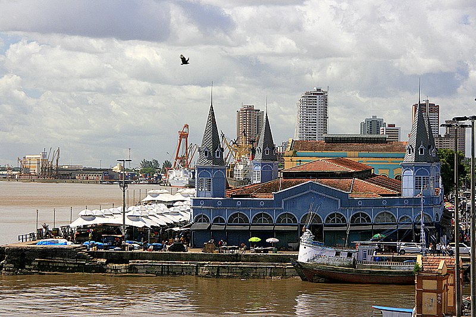
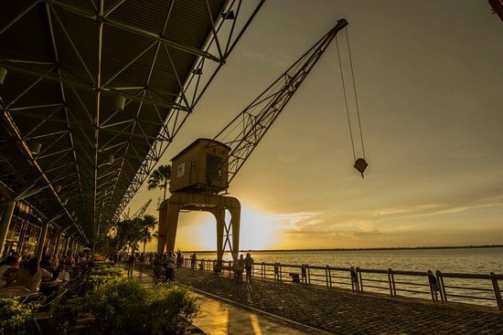
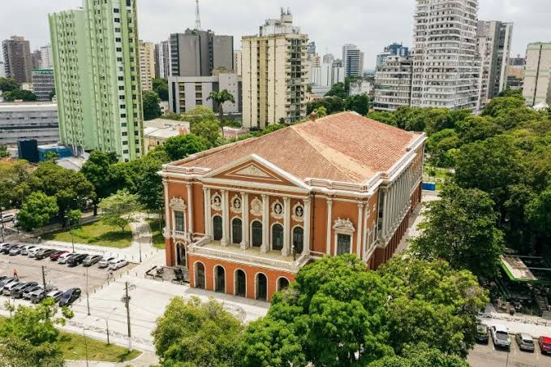
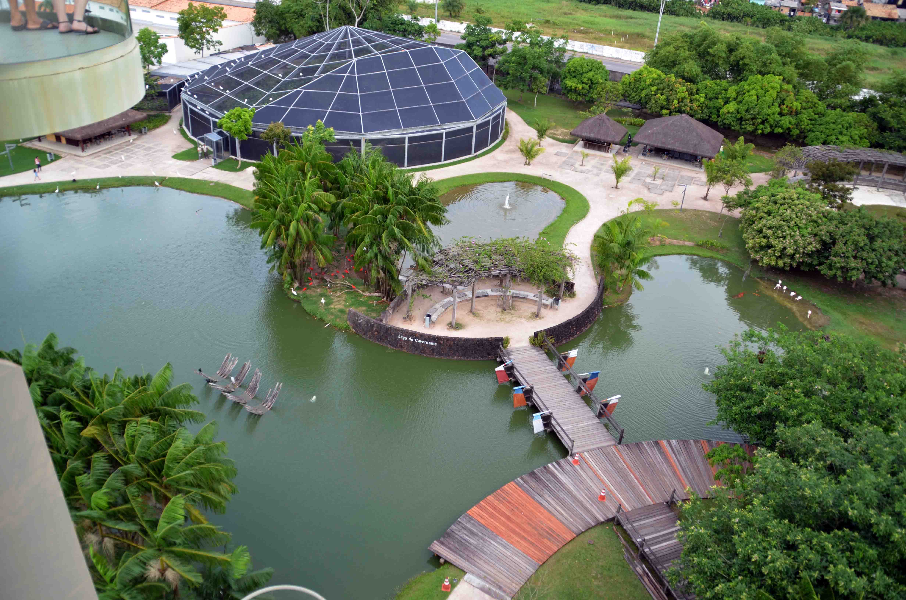

Bem-vindo a Belém.
Conheça a metrópole da Amazônia. Uma cidade onde história, natureza e uma das gastronomias mais ricas do mundo se encontram.
Fundada em 1616, Belém é a capital do estado do Pará e o principal portão de entrada para a Amazônia brasileira. Banhada pela Baía do Guajará, a cidade oferece aos participantes do CHAGS 14 uma experiência única, combinando o rigor dos debates científicos com a vivência em um território de profunda herança indígena, arquitetura europeia do ciclo da borracha e uma cultura vibrante.
Cultura e Turismo
Locais imperdíveis para visitar durante sua estadia. Clique nas imagens para expandir.

Mercado Ver-o-Peso
A maior feira ao ar livre da América Latina. Um complexo histórico onde você encontra ervas medicinais, peixes amazônicos, artesanato e a essência da cultura paraense às margens do rio.

Estação das Docas
Antigo porto fluvial restaurado que se transformou em um moderno complexo turístico. Excelente opção para um fim de tarde com restaurantes de alta gastronomia, cervejas artesanais e vista para a baía.

Theatro da Paz
Inaugurado em 1878 durante o Ciclo da Borracha, é uma das mais belas casas de espetáculos do Brasil, com arquitetura neoclássica e materiais importados da Europa no auge da Belle Époque amazônica.

Mangal das Garças
Um parque zoobotânico no coração da cidade que reproduz os diferentes ecossistemas da Amazônia, abrigando aves livres, um borboletário e o Farol de Belém.
Culinária Paraense
Reconhecida internacionalmente e premiada pela UNESCO, a gastronomia de Belém é uma fusão de ingredientes florestais ancestrais.
Açaí Tradicional
Diferente do resto do mundo, em Belém o açaí é consumido puro, sem açúcar, servindo como acompanhamento principal para peixe frito, camarão ou charque, sempre com farinha de mandioca.
Tacacá
Caldo indígena servido quente na cuia, feito com tucupi (sumo amarelo da mandioca-brava), goma de tapioca, folhas de jambu (que causam dormência na boca) e camarão seco.
Maniçoba
Conhecida como a "feijoada amazônica", leva até sete dias para ser preparada, cozinhando as folhas moídas da mandioca-brava com diversas carnes defumadas e salgadas.
Filhote e Tambaqui
Peixes nobres dos rios amazônicos, geralmente servidos assados na brasa, em caldeiradas ou acompanhados de molhos regionais e arroz de jambu.
Sustentabilidade e o Meio Ambiente na Amazônia
Receber o CHAGS 14 em Belém coloca o evento no epicentro dos debates globais sobre conservação florestal, bioeconomia e os direitos dos povos originários e comunidades tradicionais.
A Floresta e o Estuário
Belém é cercada por águas e ilhas que compõem o ecossistema de várzea estuarina. A relação entre a urbe e a floresta amazônica é um laboratório vivo de manejo sustentável e adaptação humana.
Bioeconomia e Saberes
O estado do Pará lidera iniciativas de transição para uma economia baseada na floresta em pé, valorizando o extrativismo sustentável do açaí, cacau nativo, óleos e essências manejadas por gerações.
Protagonismo Tradicional
Povos indígenas, ribeirinhos, quilombolas e extrativistas são os guardiões históricos da sociobiodiversidade. O congresso atua como ponte para integrar esses saberes ancestrais às discussões científicas globais.